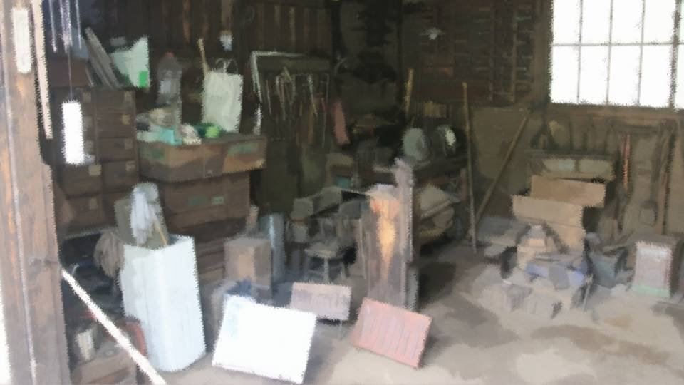
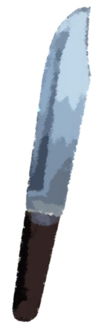

Script 00001C12


"Whew... Guess that'll do."
"Shirozaki-san! Hello!"
"Oh, Kana-chan, welcome!"
"Shirozaki-san! Hello!"
"Oh, Kana-chan, welcome!"
"Wow, what a fine nata! That's Arata's Living National Treasure, Shirozaki-san, for you!"
"Hah hah hah! The Shirozaki family has made tools for generations. And I'm every bit as good as my ancestors! Oh, right, right, I've got something to give you."
"Hah hah hah! The Shirozaki family has made tools for generations. And I'm every bit as good as my ancestors! Oh, right, right, I've got something to give you."

"Here, happy birthday!"
"Yaaay! Thank you, Shirozaki-san! Now I can do some real hunting too!"
"Hunting with a knife... is that Chigaya-chan's influence?"
"Yeah! My big sister's knife work is so cool! Being able to handle a nata and a mace matters too, but you really need something easy to carry around like this."
"Yaaay! Thank you, Shirozaki-san! Now I can do some real hunting too!"
"Hunting with a knife... is that Chigaya-chan's influence?"
"Yeah! My big sister's knife work is so cool! Being able to handle a nata and a mace matters too, but you really need something easy to carry around like this."

"Come to think of it, you're always making nata and maces, right? What do you do with so many of them?"
"Ah, these I sell to people on the outside. The ones I make get bought as top-of-the-line pieces. Well, you could say I'm the one holding up Arata's finances! Hah hah hah!"
"Whoa! Shirozaki-san, you're not just a drunk after all!"
"Ah, these I sell to people on the outside. The ones I make get bought as top-of-the-line pieces. Well, you could say I'm the one holding up Arata's finances! Hah hah hah!"
"Whoa! Shirozaki-san, you're not just a drunk after all!"

"A drink after work tastes goood! When you're grown up, have a drink with me too, okay!"
"Ahaha! Then have some good drinks ready for my 20th birthday! I'll use this knife to hunt up the makings of some good snacks to go with them!"
"I'm looking forward to it already."
"Ahaha! Then have some good drinks ready for my 20th birthday! I'll use this knife to hunt up the makings of some good snacks to go with them!"
"I'm looking forward to it already."